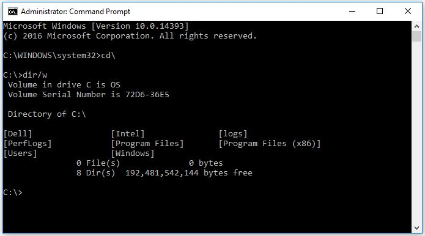
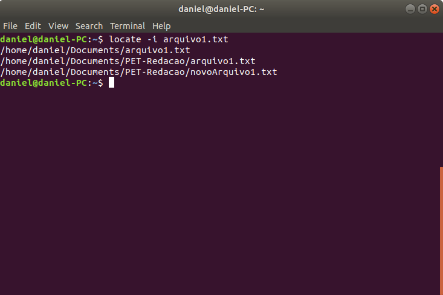

Introdução ao Command Prompt
O CMD, também conhecido como prompt de comando, é uma interface de linha de comando que remonta aos primórdios dos sistemas operacionais Windows. Embora possa parecer arcaico em comparação com as modernas interfaces gráficas, o CMD possui uma riqueza de recursos esperando para serem explorados. Ao abrir o CMD, você está prestes a adentrar um reino onde comandos de texto se traduzem em ações diretas no seu sistema.

O que Pode Ser Realizado com o CMD
As possibilidades do CMD são vastas e abrangentes. Desde a execução de tarefas administrativas avançadas até a manipulação de arquivos e pastas, passando por configurações de rede e diagnósticos do sistema, o CMD oferece um leque de comandos que podem acelerar a interação com o seu sistema operacional. A habilidade de realizar tarefas complexas com poucos comandos é o que torna o CMD uma ferramenta valiosa para usuários que buscam eficiência.
CMD vs. Terminal Linux
Para aqueles familiarizados com o mundo da linha de comando, a comparação entre o CMD e o Terminal Linux é inevitável. Ambas as interfaces compartilham a filosofia de interação textual com o sistema, mas há nuances distintas. Enquanto o CMD é nativo no ambiente Windows, o Terminal Linux é parte integral de distribuições baseadas em Unix, proporcionando uma experiência de linha de comando mais robusta e flexível. No entanto, muitos comandos fundamentais são similares em ambas as plataformas, permitindo que usuários com conhecimentos em uma delas se sintam em casa ao explorar a outra.

Aproveitando Recursos Linux no Windows
Uma surpresa para muitos é a capacidade do CMD servir como uma ponte para usuários que desejam aproveitar recursos normalmente associados ao ambiente Linux. O WSL (Windows Subsystem for Linux) é uma ferramenta que permite a execução de distribuições Linux completas diretamente no Windows. Isso significa que você pode utilizar comandos e aplicativos Linux sem sair do conforto do seu sistema operacional Windows, abrindo um mundo de possibilidades para desenvolvedores e entusiastas.
Conclusão
Em conclusão, explorar o Command Prompt no Windows é como desvendar os segredos ocultos do seu sistema operacional. Compreender as capacidades do CMD, compará-lo ao Terminal Linux e explorar ferramentas como o WSL são passos fundamentais para usuários que desejam aprimorar suas habilidades e extrair o máximo de seus sistemas operacionais. Desbrave o universo do Command Prompt e descubra um novo nível de controle e eficiência sobre o seu computador. A janela preta não é apenas um símbolo, mas sim uma porta para o poder da linha de comando.